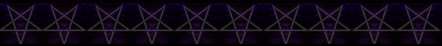

THE FIRST, THE BASE CHAKRA, THE "MULADHARA" MEANING, "ROOT."
VIBRATION [Choose from one of the following]:
Note* ALWAYS KEEP THE SAME CATEGORY IN REGARDS TO YOUR WORD OF POWER, IF YOU ARE PERFORMING THE FULL CHAKRA MEDITATION; FOR EXAMPLE, IF YOU ARE USING THE RUNIC VIBRATION, STAY WITH THIS AND USE THE RUNIC VIBRATIONS FOR THE OTHER CHAKRAS.

THE MEDITATION:
1. Align [visualize] your base chakra pointing upwards, like a pyramid, as shown at the top of this page.
2. Perform the following breathing exercise:
3. Breathe in, focus upon, and feel your base chakra and on the exhale, vibrate your selected word of power several times.
4. Remain still, focusing upon and feeling your base chakra for several minutes.
BACK TO SATANIC POWER MEDITATION MAIN PAGE
© Copyright 2007, 2013, Joy of Satan Ministries;
COLOR: Red
NUMBER OF "PETALS": 4
PLANET: Saturn
GENDER: Male
DAY: Saturday
METAL: Lead
FUNCTION: Survival, grounding
INNER STATE: Stability
BREATHING TECHNIQUE: [See below]
"N-N-N-N-EE-EE-EE-N-N-N-N-EE-EE-EE-B-B-B-B-B"
"L-L-AH-AH-AH-M-M-M-M" or "L-L-AH-AH-AH-N-N-G-G"
"S-S-OH-OH-V-V-EE-EE-LL-OH-OH"
"S-S-AH-AH-U-U-U-L-L-L"
"L-L-AH-AH-AH-U-U-U-U-M-M-M-M"
The U rhymes with the English word tOO
This meditation is best performed on Saturdays during the hours of Saturn, but if you are doing the full meditation; working on all of your chakras, then any time is fine.
BACK TO THE FULL CHAKRA MEDITATION PAGE
Library of Congress Number: 12-16457